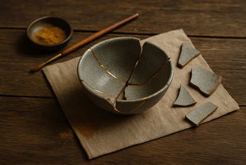

Celebrating the Imperfect
Perfection is a strange idea. It’s everywhere — in the photos people post, the goals they chase, the ways we’re told to speak, move, even heal.
It shows up in small ways. Smiling when we don’t feel like it. Brushing over something we don’t quite understand. Holding ourselves to some quiet standard that never seems to be ours to begin with.
But what if none of it matters? What if being “perfect” is just another kind of hiding?
There’s a practice I came across a few years ago — and it stayed with me. It’s from Japan, and it’s called kintsugi — the art of putting broken pottery back together using gold.
The break isn’t disguised. It’s made visible. The object doesn’t go back to how it was — it becomes something else. And, somehow, more beautiful because of it.
I think most of us carry a few cracks. Not dramatic ones, always. Not even visible. But they’re there. Loss. Grief. A version of ourselves we had to let go of. A choice we made that changed everything.
The older I get, the more I realise healing isn’t about becoming who I used to be. It’s about learning to carry who I am now — fully. Without apology. Without pretending I don’t feel what I feel.
That’s the heart of my work now. Not fixing people. Not fixing myself. Just walking with others who are done chasing the shiny version of life, and ready to meet the real one. One that’s marked. Honest. And, in its own way, golden.